《忍者必须死3》深度体验和拆解分析报告
目录
一、游戏概述
1. 游戏简要介绍
《忍者必须死3》是炎魂网络旗下小白工作室研发的一款2D横板多人跑酷战斗类手游，简称"忍3"，于2018年8月23日发布。作为系列的第三部作品，游戏在保留了前作经典跑酷元素的基础上，增添了多人竞技模式和社交系统，为玩家带来更丰富的游戏体验。游戏融合了忍者、跑酷、闯关和PVP等多种玩法，在轻松休闲的游戏风格中加入了一定的竞技性，使其拥有较高的可玩性和较长的生命周期。
|
简要信息 |
详细说明 |
|
游戏名称 |
《忍者必须死3》 |
|
版本信息 |
2.0.75 |
|
游戏类型 |
动作跑酷 |
|
开发商 |
杭州炎魂网络科技有限公司 |
|
发行商 |
杭州炎魂网络科技有限公司 |
2. 游戏题材和美术风格
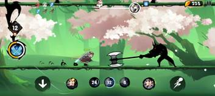
游戏题材："忍3"以日本忍者武士阴阳师等传统文化作为主题背景，玩家在游戏中扮演忍者阵营的不同角色，参与角逐，抵抗鬼族入侵和武士的压迫，逐步揭开事件真相，维护忍界的和平。
美术风格："忍3"的美术风格独特，采用水墨画风，水墨飘逸灵动的特点很好地贴合了“跑酷”这一核心玩法，增强了游戏的表现力。游戏以日本的传统建筑服饰以及忍者武士的服化道作为画面基调，将现代动漫风格与传统日本元素巧妙融合。
3. 游玩说明
- 游戏时长：1000+天。以前退坑过几次，最新账号累积登录天数900+天
- 账号等级：绝忍（约为全服前10%）
- 氪金程度：累计 1000+ RMB
4. 系统框架
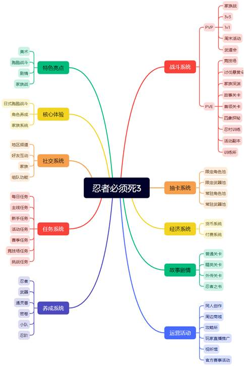
5. 游戏主要特色和核心亮点说明
- 创新的跑酷+战斗系统：游戏将传统跑酷与战斗系统完美结合，玩家不仅需要灵活躲避障碍，还需要及时攻击敌人，增加了游戏的策略性和技巧性。
- 丰富的角色系统：游戏拥有十几种可解锁的作战忍者，每个角色都有独特的技能和特性，玩家可以根据自己的喜好和策略选择不同角色。
- 精心设计的关卡系统：游戏拥有数百个精心设计的关卡，难度递进，挑战多样，为玩家提供长期游戏内容。
- 创新的多人竞技模式：实时对战系统让玩家可以与同服玩家一较高下，增强了游戏的社交性和竞争性。
6. 游戏基本操作说明
“忍3”为2d横版跑酷手游，常规操作为跳跃和蹲下。


跳跃操作示例 蹲下与上翻示例
此外，还有各式技能，比如武器，忍术大招，卡牌技能等。

武器技能与忍术示例
二、游戏市场表现（外围数据）
以下数据来源自七麦、TapTap和百度。
1. 下载排行说明
七麦数据统计IOS平台近一年的排名趋势：
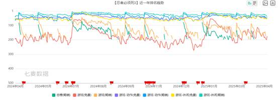
七麦数据统计IOS平台近一年的下载量：
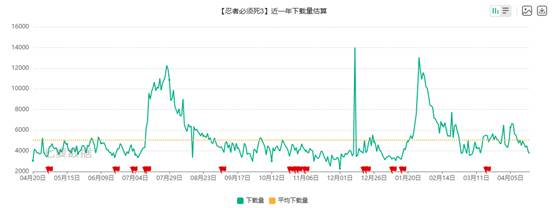
七麦数据统计安卓平台近一年的下载趋势：
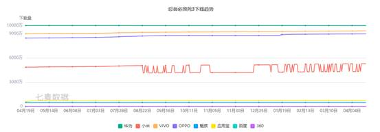
TapTap动作类游戏排名：
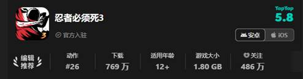
2.用户口碑和评论说明
- 用户口碑
- TapTap（满分10）：5.8
- App Store（满分5）：4.5
- 安卓渠道汇总（满分5）：4.2
- 评论说明
- 正面评价主要集中在以下方面：
- 游戏画面精美，题材新颖
- 可玩性高，手感很好
- 负面评价主要集中在以下方面：
- 数值膨胀，没有平衡性
- 游戏爆率较低
- 策划运营摆烂，活动千篇一律
三、核心玩法说明
1. 游戏核心体验
游戏核心体验闭环：装备收集――装备养成――战斗
核心体验闭环说明：
- 装备收集
- 玩家通过消耗货币、氪金等方法进行抽卡，获取角色和武器，提高角色和武器等阶，为装备养成打下基础。
- 装备养成
- 玩家通过消耗各种资源提升角色等级、武器等级等，并通过每日奖励和活动奖励收集并升级宝物、密卷等辅助装备，提高角色属性面板，进而更好地进行PVP和PVE等战斗。
- 战斗
- 玩家基于养成好的角色面板与其他玩家进行实时在线竞技、合作闯关或者单人闯关，通过率先完成关卡、消灭boss、抵达地图终点等方式赢得胜利。
- 玩家通过对战获胜奖励、排行榜奖励等方式获取货币、装备养成资源。
2. 战斗玩法的体验分析
a. 竞技场
竞技场是“忍3”作为一款跑酷游戏的基础玩法。在该玩法中，玩家以存活为首要目标不断躲过障碍，也可通过武器或者忍术等方式破坏障碍物。跑酷距离的增加和障碍物的破坏均可以增加得分，得分越高排名越好。
竞技场会每周根据玩家段位的不同，将每50人分为一组。每位玩家需要参与跑酷获取更高的得分以提高自己在分组中的名次，排名越高可获得的竞技币越多。
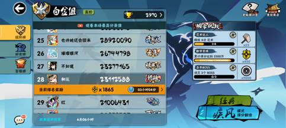
竞技场内有两种模式，经典模式和疾风模式。两种模式的区别在于基础速度和得分倍率不同。在任意模式中，每跑酷一定距离都会提高跑酷速度，跑酷速度越快对玩家的反应速度考验越大，更容易躲避小怪或障碍失败导致死亡，进而结束本次跑酷。

竞技场的跑酷地图分为多个关卡。每个关卡在经历一定距离的跑酷后进入boss对战，玩家在规定时间内击败boss可获得额外得分，若没击败boss则无法获得额外得分。boss对战结束后进入奖励关卡（类似天天酷跑的飞天奖励关卡），玩家可骑着通灵兽在天上拾取金币、消灭小怪来获取得分。若玩家在前面多个关卡中存活下来，则最终会进入无尽关卡（游戏中称为忍神山）。该关卡中没有boss对战，玩家只以存活为目的躲避无限随机循环的障碍物。

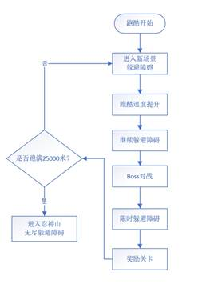
玩家的装备会对竞技场的跑酷有所帮助。例如，等级越高的角色得分加成越高；有的角色具备多段跳或者滑翔的能力，能更轻松的躲避小怪和障碍物；不同宝物的装备可提高玩家的得分加成、生命值等属性，提高得分率或者存活率，进而提高跑酷成绩。
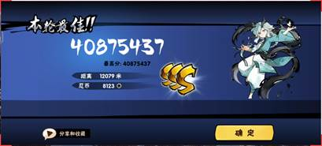
b. 悬赏令讨伐
玩家通过悬赏令商店、活动奖励等方式可获得悬赏等级为 D级 ~ SS+级 的悬赏令，等级越高的悬赏令获取的难度越大。悬赏等级越高的boss血量和躲避弹幕的难度就越高，讨伐获取的奖励也越丰厚。
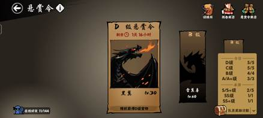
每个悬赏令都需要与他人组队共同讨伐，队伍中所有玩家共享boss的剩余血量，玩家各自对boss进行输出，当boss血量清零后即讨伐胜利。讨伐悬赏令可获得一定量的养成资源，且对boss造成伤害最多的玩家（即MVP）可额外获得奖励。

为避免资源垄断，“忍3”限制了每位玩家每天和每周可获取不同悬赏令等级队员奖励的次数，保证所有玩家均可完成每日的悬赏令讨伐，获得基本的日常资源。但对于高等级的悬赏令，由于其相对的稀缺性更多地需要玩家通过社交系统如家族、好友等渠道邀请参与讨伐，也可以通过地区频道他人发布的链接参与讨伐，但通常需要靠“抢”的方式才可进入房间参与。
c. 3v3决斗场
3v3模式可以说是“忍3”最重要的玩法，其结合了跑酷和boss讨伐两者的模式，并引入了卡牌系统，是一个很创新的设计。
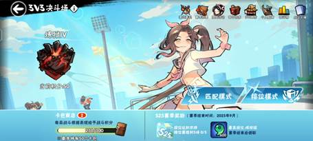
玩家通过匹配或组队的方式进行3对3的PK。初始时系统会随机本次对战的战场地图和战场效果，玩家根据当前战场效果自主决定本次对战要使用的卡牌和装备，倒计时结束后进入战斗。进入战场后，所有玩家处于同一起跑线，每位玩家在跑酷中获取金鱼币，并以存活状态抵达金鱼币商店购买先前选择的卡牌，随即进入boss战。每次对战都需要经历两轮跑酷+boss战，战场进度高的队伍获胜。
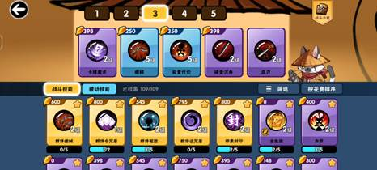
卡牌选取图例

3v3跑图过程图例

3v3胜利结算图例
排位模式采取赛季制+积分制，根据当前段位与战场难度以及对局贡献计算获胜积分，每累积100分则进阶一个小段位，累积几个小段位进阶到大段位。段位越高当前赛季所获取的奖励越丰厚。
四、外围系统与玩法拓展
1. 家族系统
家族系统是“忍3”的社交系统中最重要的组成部分。每个家族拥有最多100位家族成员。家族内含有家族商店、深渊系统、首领系统、家族战系统。
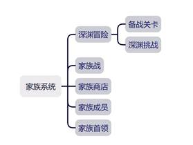
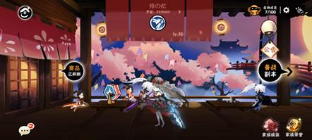
a.家族战
家族战于每周六周日晚上8点开始，9点20分结束。系统会为每个家族匹配积分排名最接近的两个家族进行对战。家族战也有单独的赛季制度，以积分制进行排名，排名越高的家族赛季结算奖励越丰厚。
每场家族战有多个对局，其类别组成有：团队战、先锋战、副将战、主将战、王牌对战、终极头目战，涵盖了3v3、1v1等模式，不同类型的对局获胜积分不同。每位家族成员只能参与一次除了团队战以外的对局，因此每场对局开始前，需要家族内部沟通进行排兵布阵，决定由谁上场参与哪个场次的对局。最终累积积分多的家族获得当天家族战段位胜利。
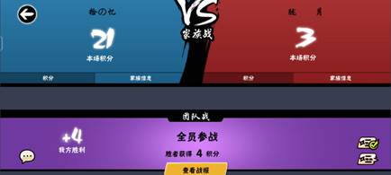
b.深渊冒险
深渊冒险系统由备战副本和深渊挑战两部分组成。其中备战副本开启于周日到周五晚上7点半，深渊挑战于每周五晚上8点开始，9点结束。与家族战相同，深渊冒险也有单独的赛季制度，以积分制进行排名，排名越高的家族赛季结算奖励越丰厚。
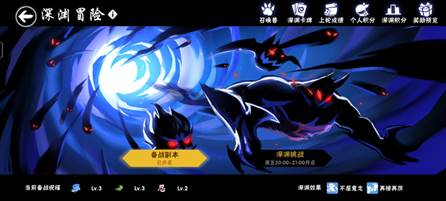
备战副本由每周轮换的三个特色副本构成，家族成员完成指定进度可获得深渊挑战的buff加成。
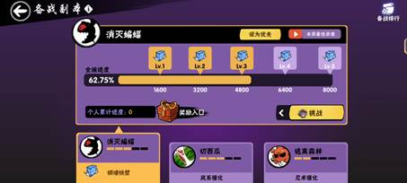
深渊挑战由无限的boss关卡组成，可以看做是爬塔。家族成员需要组队打败每一层boss，深渊层数越高奖励越丰富。
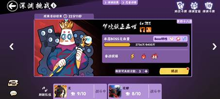
2. 剧情关卡
《忍3》设计了多层次的剧情关卡体系，结合主线故事、角色外传和精英挑战，既承担了世界观叙事的任务，也在实际玩法中承接了资源投放与养成素材产出，是推动玩家持续游玩的核心内容之一。
a. 普通关卡（主线剧情关卡）
普通关卡主要提供了游戏的主线故事推进和世界观搭建的作用，目前游戏中一共推出了十五章剧情。每章剧情都包含若干关卡，包含抵达终点、收集指定数量物品、击败boss等类型的关卡副本。每章剧情均需要玩家游戏账号等级到达一定水平后才会解锁，且难度逐渐加大。
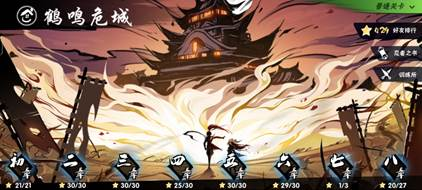
早期关卡承担新手引导功能，逐步释放玩法机制。通关每个小关卡后均可获得奖励，包含基础角色升级所需经验、金币、装备等。无伤通关或满星通关还可获得额外奖励。
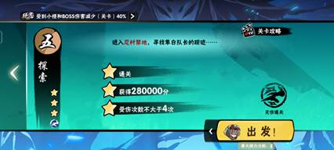
b. 外传关卡（支线剧情/角色剧情）
外传关卡是为特定角色构建的个人专属剧情关卡，一般不涉及主线推进。外传关卡需要玩家拥有指定角色后才可体验该角色的外传关卡。
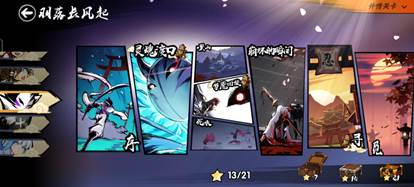
c. 精英关卡（高难度重复挑战）
精英关卡为普通关卡的进阶版本，其剧情与普通关卡相同，但是难度与奖励有一定提升。目前游戏仅推出了九章精英关卡，并没有与普通关卡同步推出后续关卡。
3. 周末活动
周末活动系统是“忍3”的常驻系统。每周会轮换一个主题的周末活动，分别有多人竞速、多人同屏竞速、讨伐鬼族、多人乱斗、忍者委托。玩家在周六周日完成周末活动的每日任务可获得任务币和任务勋章，用于在活动商店兑换资源。活动排名靠前的玩家也可根据名次获得额外奖励。
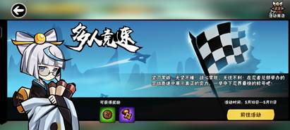
周末活动的设计旨在提高玩家周末的活跃度，并丰富游戏的可玩性。
4. 创意工坊
创意工坊是“忍3”于2024年推出的新的常驻活动。该玩法鼓励玩家制作并投稿地图，投稿的地图可供其他玩家进行游玩体验，对于提升内容供给，延长游戏生命周期有较大作用。
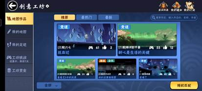
a. 作品征集令
官方会定期推出作品征集令活动，通过丰富的奖励鼓励玩家制作优秀地图来提高玩家游玩的参与性和社区互动性，为游戏的游玩内容持续注入新鲜血液。
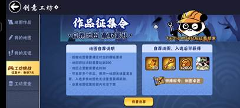
b. 工坊挑战
每期的作品征集令结束后会推出工坊挑战活动，通常持续一到两个月。每周选取三个征集令中得到的游戏地图关卡作为挑战关卡给玩家游玩，玩家在周末完成工坊挑战任务后可获取工坊币，用于在工坊商店换取养成资源。
c. 工坊赏金
工坊赏金板块用于激励创意工坊作者的日常创作。其通过给予额外工坊币的方式激励地图作者发布地图悬赏，供其他玩家游玩，玩家游玩悬赏的地图关卡可获得挑战奖励。
4. 版本活动
每个大版本会推出当前版本的主要活动玩法。玩家通过完成版本活动的任务可获得活动任务代币，并于版本活动商店兑换资源。
大部分版本活动的核心玩法与悬赏令讨伐模式相同，均需要玩家组队或单独完成boss挑战。每个版本活动均会推出排行榜给玩家内卷，提高头部玩家的参与积极性。
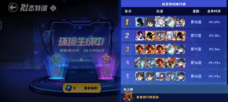
五、付费与礼包系统
“忍3”的礼包系统主要分为常驻商店礼包、活动特惠礼包、限时弹窗礼包、新手礼包。
1. 常驻商店礼包
常驻商店礼包是游戏中长期开放的标准化礼包，包括充值档位商品（如月卡）和固定内容包（如每周特惠包）。其中月卡、通行证进阶包以其高性价比的特性主要面向长期在线、深度游玩的中低度消费玩家，而其他固定内容包主要面向中重度付费玩家（“氪佬”）。
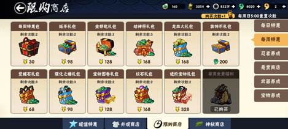
2. 活动特惠礼包
活动特惠礼包是伴随节日、版本更新等游戏运营活动推出的限时礼包，通常拥有高性价比与限购机制，常作为拉动短期营收的核心手段。在“忍3”每个版本活动均会推出活动特惠礼包，通常分为三个档次：30元、168元、328元，其性价比与价格成反比。
除了上述三档礼包，还会推出6元每日限购礼包。该礼包的终日礼包含头像，对头像收集档和成就党有较大吸引力，且首日礼的性价比很高，因此该礼包有效提高了玩家的付费意愿，应该也是每个活动提高流水的主要手段。
在大版本活动中，“忍3”会为某个热门角色推出新皮肤，并将其获取方式绑定在累充活动中。玩家需要在当前活动期间内充值一定金额才能获取该皮肤。累充活动的充值档位分别由6元到3000元区间共11个档位构成，获取皮肤的档位为300元，也是大部分中轻度付费玩家的付费上限档位。而更高档位的奖励也非常丰富，特定档位的自选礼包奖励对氪佬玩家快速养成指定角色配置具有极高作用，比如1000元和3000元档位的自选图卷礼包。因此氪佬玩家在大版本期间基本上会付费不少于1000甚至3000元来获取这部分资源。
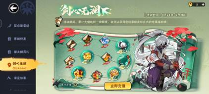
3. 限时弹窗礼包
限时弹窗礼包是一种以浮窗或界面弹窗形式出现的“诱导型礼包”，常出现在关键节点。在“忍3”中，当玩家通过抽卡获取到特定强力角色或武器时常出现（不是每次都会出现），该礼包限时3小时，有30元和128元两个档位，其性价比较低，主要供中重度付费玩家购买。
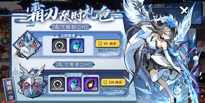
4. 新手礼包
新手礼包面向新注册玩家，是培养新注册玩家付费习惯，实现新用户付费“破0”的重要手段。在“忍3”中设置了1元、6元、30元档位的超值礼包，性价比适中。
六、游戏整体评价
1. 游戏优势
- 玩法融合创新：跑酷+战斗+养成的多维融合
- 核心玩法新颖：“忍3”作为一款跑酷手游，在跑酷的基础玩法上还结合了角色养成、实时战斗的机制，玩法新颖，至今同赛道游戏基本没有对手。
- 战斗系统立体：角色大招释放、武器技能、连携技能、卡牌使用等机制打破传统跑酷“单线条玩法”。
- PVP与PVE并重：多人boss战、工会协作模式提高社交互动、增强用户粘性；实时竞技提高了游戏竞技深度，促进玩家深度培养账号。
- 美术风格突出：水墨+二次元的强视觉识别度
- 水墨风格独树一帜：整体画风采用水墨国风+手绘线条，视觉呈现区别于市面大多数同类作品。
2. 游戏劣势
- 内容产能不足，更新频率偏低，缺乏持续创新能力
- 关卡/剧情更新慢：PVP赛季与剧情模式更新周期长，跑酷地图亘古不变、缺乏新意，降低持续活跃玩家游戏新鲜度。
- 活动“套皮化”严重：许多活动只是重复机制+换皮奖励，缺乏新颖玩法，导致参与热情下降。
- 数值膨胀问题严重
- 角色/武器强度递增幅度过高：新角色/新武器频繁“碾压式加强”，加剧养成焦虑，打破平衡。
- 战力碾压体验差：回归玩家与持续活跃玩家之间存在显著的战力差距，PVP环境对回归玩家极不友好，往往面临一上线就被碾压的情况，导致其缺乏参与感与成就感，容易在短期内再次流失。
- BUG频发，优化缓慢
- 错误复现率高：常见如道具描述错误、界面跳转异常等细节问题，暴露测试和打磨不足。
- 战斗判定不准确：部分技能、判定存在问题，导致吞武器、吞伤害的情况出现，影响玩家游戏体验。
- 旧系统无人维护，功能冗余感强
- 老系统“吃灰”严重：如忍者小屋、通灵兽养成无人再碰，成为“界面占位”功能。
- 部分养成资源供给过时：如残卷商店、活动商店的奖励都是过时内容，已无法适应当前环境。
- 匹配机制不合理，严重影响公平性
- 高段位打低段位现象频发：匹配系统存在段位保护或掉分机制漏洞，导致部分高战力玩家通过“炸鱼”（刻意降段）进入低段位房间，形成碾压局面，打击普通玩家游戏体验。
- 匹配权重缺失维度：当前系统仅以段位或胜率为参考，缺乏对战力、历史表现等因素的综合评估，导致匹配质量低、竞技乐趣下降。
- 脚本外挂问题严重，打击不力
- 脚本泛滥：部分玩家通过自动脚本抢地区悬赏资源，影响其他玩家获取资源，破坏游戏生态。
- 反外挂机制滞后：目前检测与处罚机制不够及时，有时脚本外挂玩家长时间未被处理，造成正常玩家流失与不满情绪积聚。
3. 个人游戏基本感受
- 美术：
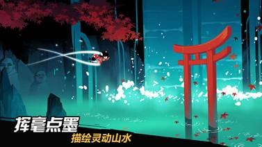
- 日式+水墨风非常亮眼，画面风格独树一帜，最初就是在各类平台看到该游戏的广告画面被吸引入坑。
- 虽然游戏画面很精致，但近些年的角色特效和武器特效逐渐花哨，与水墨风渐行渐远。
- 故事剧情：
- 中规中矩甚至偏下，剧情走向有点莫名其妙甚至降智，到后期主角团基本成为陪衬。由于本游戏主打养成战斗，故事剧情不是核心玩法，故问题不大。
- 养成：
- 养成资源：
- 培养周期长、养成速度过慢：忍3的养成体系是逐渐丰富拓展起来的，但是日常奖励却是老一套，导致玩家全方位培养起一个能打的配置要花费数月甚至一年之久，等到角色养起来已经沦落为T0.5甚至T1了。陈旧的日常奖励不足以支撑玩家快速地培养起一个角色非常让人诟病，好在一年前忍3终于优化了日常奖励获取量，并革新了周末主力活动家族战和深渊的奖励内容，让账号养成速度不再像以前那么慢了。
- 角色、武器、宝物：
- 游戏早期的数值较为平衡，但几年过后逐渐数值膨胀，到现在基本上新出的角色数值吊打老角色，武器也是一样。这种膨胀速度引得不少老玩家退坑，尽管目前忍3对新角色的数值膨胀开始有一定地控制，也曾经加强了老角色，但新老角色的强度差异还是非常明显，导致现在基本没人玩老角色了。
- 忍3目前应该是有意淡化老角色，对玩家获取新角色新武器的难度降低不少，以弥补新老玩家配置差距过大的问题。对于没有老角色情怀并且玩了2年多账号配置基本快触顶的我来说，只要策划能合理控制数值膨胀速度，养成这方面还是中规中矩的。
- 游戏内容：
- 本作的游玩体验是非常不错的，本作主要核心玩法主要分为PvP（3v3排位、家族战）和PvE（悬赏、深渊、竞技场），周末会有各种周末活动轮换，能维持玩家的活跃度。萌新入坑可以体验到非常丰富的游戏体验。
- 但随着游玩不断深入，会发觉现在该游戏的游玩内容逐渐千篇一律。早期忍3对活动内容的更新是很频繁的，但近几年该游戏基本没有什么创新可言。版本活动基本都是套壳以前的内容，周末活动及其奖励一直不变，就连核心玩法3v3也仅仅是每个赛季更新高段位的战场地图，低段位的战场地图几年不变。游戏创新力这方面目前非常差劲。
- 抽卡系统：
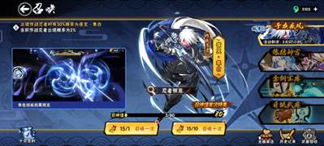
- 忍3的抽卡资源获取是比较慢的，对于零氪党来说抽取新武器新角色需要攒几个月的道具；对月卡党等微氪玩家算是比较友好；氪佬另说。以前作为一个零氪党，虽然当时玩得不多，但总体是觉得本游戏的抽卡养成是可以接受的。现在作为一个微氪党，对比其他抽卡类游戏，我是认为忍3这方面还是比较良心的。
- 关于保底：
- 保底机制是忍3曾经很受诟病的一点，早期游戏是没有大保底一说的，只有60抽的小保底。后来改成180抽大保底，再到现在120抽大保底。然而，对于非酋来说实际上现在的大保底仍然是180抽，因为抽满120抽仅仅意味着下次出金必定是up角色或武器，并不是说抽满120抽必出up内容。
- 但现在的策划对于保底机制有一定优化，对于限定武器或角色，下次up时会通过头几次抽取up削减保底阈值或者通过抽满一定数量提供额外奖励的方式来提升玩家抽卡这方面的满意度，对于非氪佬来说还是比较友好的。
- 社交：
- 本作至今让我当前账号游玩至今不退坑的主要原因就是其中的家族系统，忍3的主要社交系统就是好友和家族，其中重点是家族系统。每个家族基本都会有其族员自行创建的QQ群、微信群等作为日常游戏内容的交流互动平台，如果玩家没有现实中的好友玩伴又不参与家族的内部讨论的话，估计是很难留存保持玩下去的动力的。
4. 游戏总结
得益于本作的玩法和美术，我是认为这款游戏足够优秀，对于新入坑的玩家来说体验够好，游戏初期内容足够丰富。但游戏的长线运营明显乏力，活动更新缓慢套皮，缺乏创新力，对于持续游玩玩家游戏体验感逐渐下降。
或许是由于目前同赛道基本没有足够竞争力的竞品出现，导致游戏策划摆烂，使得该游戏目前仍处于一个小众游戏的地位。